AP-Turm
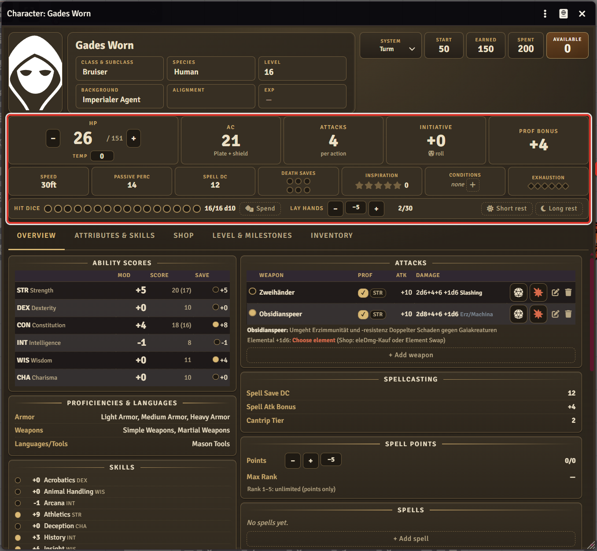
Inhalt
- Installation und Update
- Charaktere: Import, Bogen, Export, Backup
- NPCs: Statblock, Turm-Elemente, Anzeigename, Kopien
- Kampf: Angriff, Schaden, Zustände, Übersicht
- Würfe anfordern (Request Roll)
- AP und Turmwissen vergeben
- Loot, Party Stash, Übergabe, Item-Bibliothek
- Shop-Editor: eigene Point-Buy-Einträge
- Jukebox
- Nachschlagen und Einstellungen
- Bekannte Grenzen und wenn etwas klemmt
1 · Installation und Update
Das System einmal in Foundry bringen, eine Welt damit anlegen und später Updates einspielen, ohne Daten zu verlieren.
Erstinstallation
- Die Datei
ap-turm-v1.1.0.zipin den Systemordner von Foundry entpacken. Danach muss dort ein Ordnerap-turmliegen, in dem direkt die Dateisystem.jsonsteht:Zielordner (Windows-Standard)%LOCALAPPDATA%\FoundryVTT\Data\systems\ap-turm\ └─ system.json, module\, templates\, styles\ …
Auf anderen Rechnern: <Foundry-Datenordner>/Data/systems/ap-turm/ - Foundry komplett beenden und neu starten. Im Setup erscheint unter Game Systems der Eintrag „AP-Turm“.
- Worlds → Create World, als Game System „AP-Turm“ wählen, Welt starten.
- Kontrolle in der Welt: Seitenleiste Game Settings (Zahnräder) zeigt ganz oben „AP-Turm 1.1.0“.
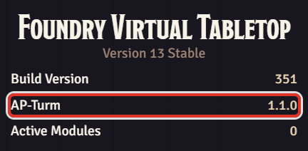
Update auf eine neue System-Version
- Vorher die Welt sichern: im Foundry-Setup Backups oder den Ordner
Data/worlds/<Weltname>kopieren. - Foundry beenden, den Ordner
Data/systems/ap-turmvollständig ersetzen (alten Ordner löschen, neue Zip entpacken). Nicht darüber kopieren, sonst bleiben alte Dateien liegen. - Foundry starten, Welt öffnen. Beim ersten Start nach dem Update fragt das System nach dem Backup (Abb. 1.2). Backup done, migrate führt die Anpassungen aus; Later verschiebt sie auf den nächsten Start.
- Bringt ein Update neue Akteur-Typen mit (z. B. den Party Stash), muss die Welt einmal über Return to Setup beendet und neu gestartet werden. Ein F5 im Browser reicht dafür nicht.
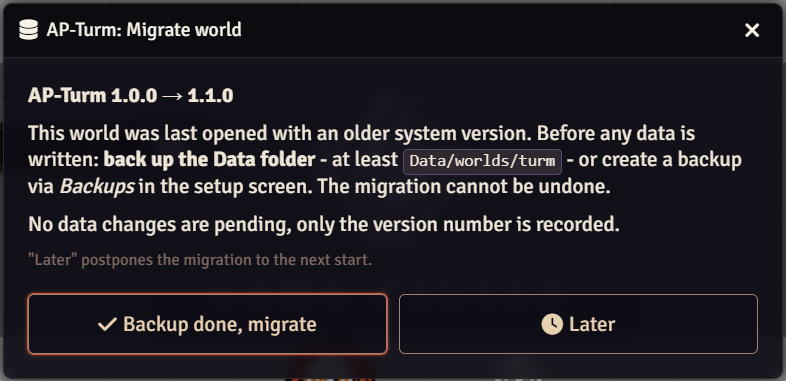
2 · Charaktere: Import, Bogen, Export, Backup
Die Spieler bauen ihre Charaktere weiterhin in der AP-App. In Foundry werden sie importiert, gespielt und bei Bedarf zurück in die App exportiert.
Charakter aus der App importieren
- Spieler exportiert in der AP-App sein JSON (Datei
ap_<name>.json) und schickt es der Spielleitung. - Seitenleiste Actors → AP-Turm → Import character, Datei wählen. Der Akteur wird mit allen Waffen, Zaubern, Feats und Gegenständen angelegt.
- Akteur dem Spieler zuweisen: Rechtsklick auf den Akteur → Configure Ownership → Spieler auf Owner.
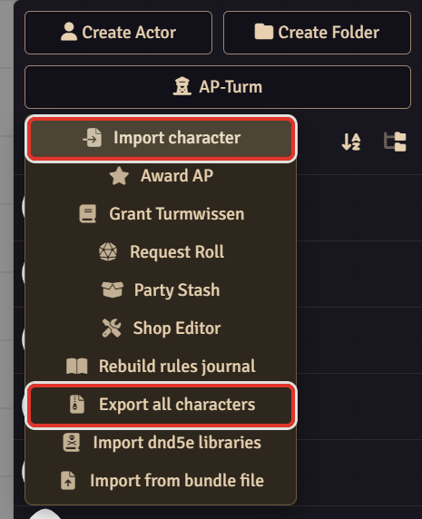
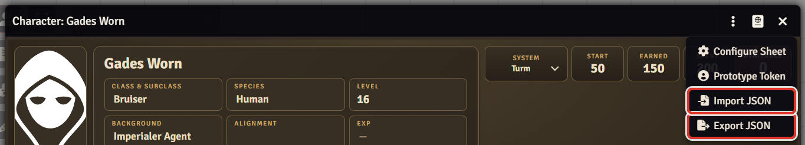
Zurück zur App und Gesamt-Backup
- Einzelner Charakter: Export JSON im Bogen-Menü (Abb. 2.2) erzeugt eine Datei, die die App wieder lädt.
- Alle Charaktere: AP-Turm → Export all characters lädt eine Zip
ap-turm-characters_<datum>.zipmit je einer Dateiap_<name>_<datum>.jsonherunter. Die Spielleitung bekommt eine Flüsternachricht mit der Anzahl. Zurück geht jede Datei über den normalen Import.
Was der Bogen zeigt
Oben die Identität und das AP-Konto (Start, Earned, Spent, Available). Darunter die Kampfleiste: HP mit −/+-Knöpfen und Temp-HP, AC, Angriffe pro Aktion, Initiative, Übungsbonus, Tempo, Passive Wahrnehmung, Zauber-SG, Todesrettungswürfe, Inspiration, Zustände und Erschöpfung, Trefferwürfel, Lay on Hands und die Rast-Knöpfe. Die Reiter Overview, Attributes & Skills, Shop, Level & Milestones und Inventory entsprechen der App. Alle Werte rechnen genauso wie dort.
3 · NPCs: Statblock, Turm-Elemente, Anzeigename, Kopien
Gegner nicht abtippen, sondern einen 5e-Statblock einfügen und vom System zerlegen lassen.
NPC aus einem Statblock
- Actors → Create Actor, Typ NPC, Namen vergeben. Im Kopf System auf „Turm“ oder „Standard AP“ stellen.
- Reiter Statblock: den Statblock aus Buch, PDF oder Webseite in das Textfeld einfügen.
- Parse statblock into fields klicken. AC, HP, Tempo, Attribute, Saves, Resistenzen, CR, Legendary-Zähler und alle Aktionen werden übernommen. Nichts geht verloren: Was nicht erkannt wird, landet als Text im Eintrag.
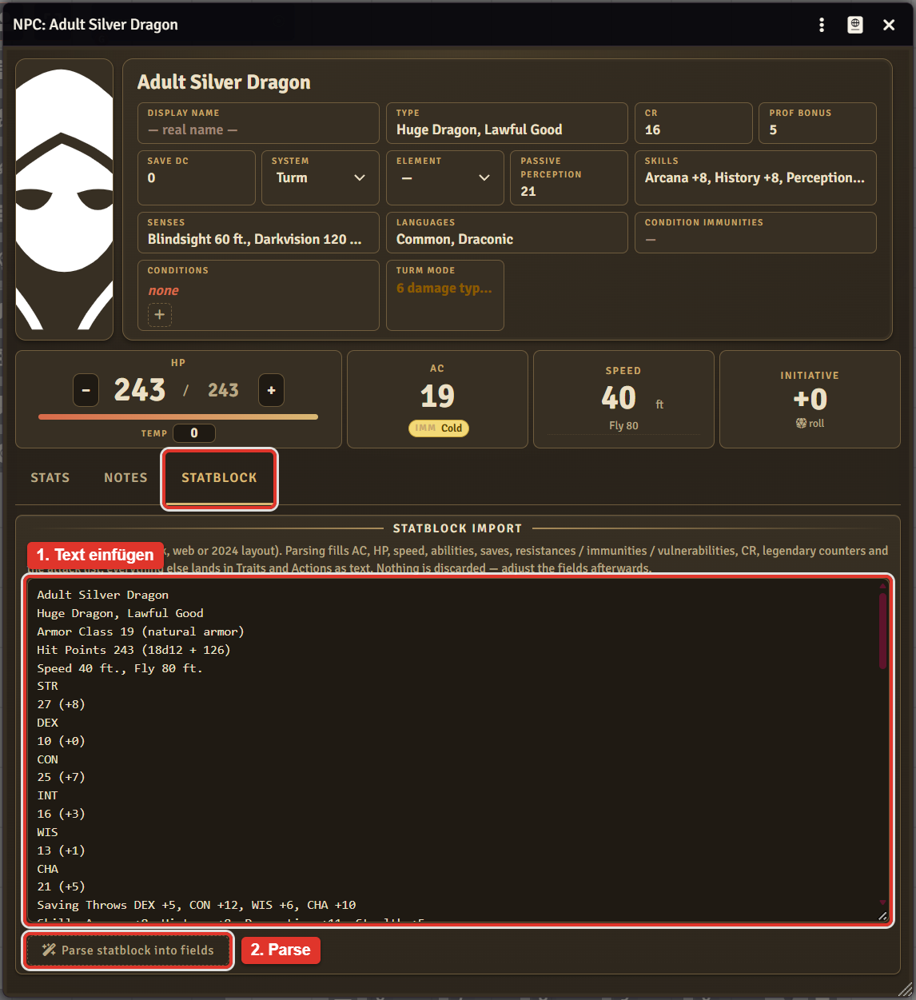
Was erkannt wird
- Angriffe mit Trefferbonus, Schadenswürfeln und Reichweite: Würfel-Knopf für den Angriff, Stern-Knopf für den Schaden.
- Rettungswurf-Effekte (z. B. Frightful Presence, DC 18 WIS): Schild-Knopf fordert den Save bei den anvisierten Tokens an.
- Recharge (z. B. „Recharge 5-6“): Der Blitz-Knopf setzt die Fähigkeit ein und markiert sie als verbraucht. Zu Beginn des NPC-Zugs würfelt das System die Aufladung automatisch.
- Flächen (Kegel, Linie, Kreis): Polygon-Knopf setzt das Template auf die Karte (Kapitel 4).
- Legendary Resistances / Actions als Kreise zum Abhaken, Long rest füllt sie auf.
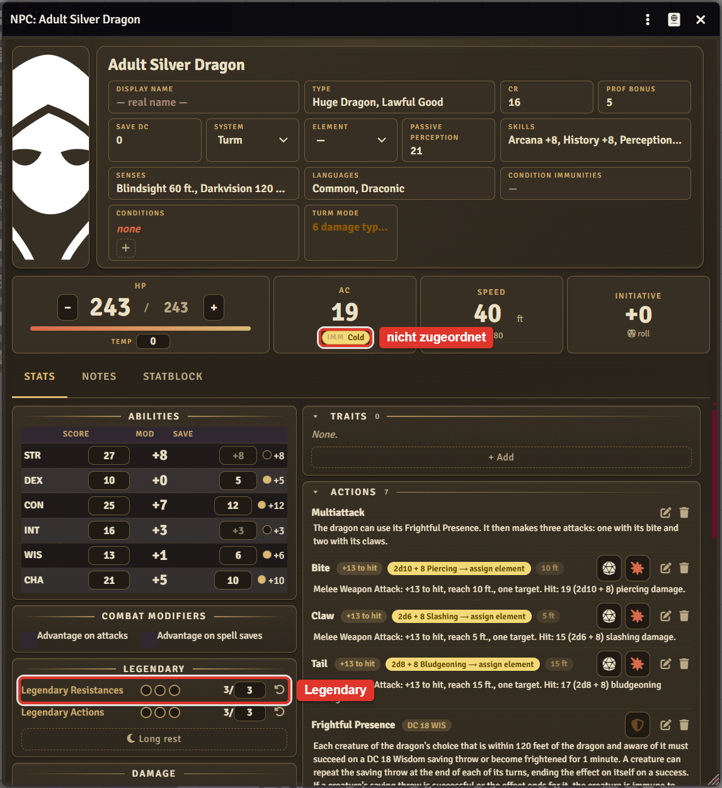
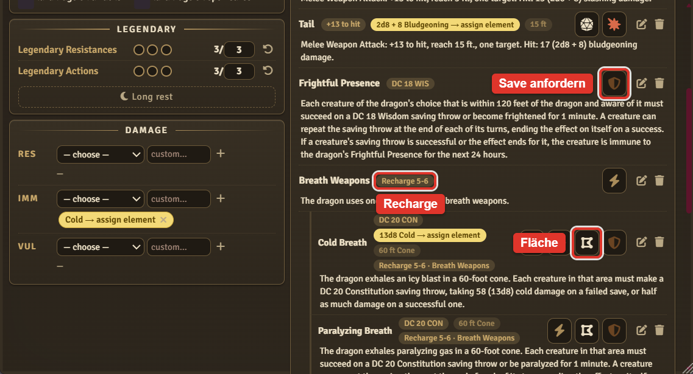
Schadenstypen im Turm-Modus zuordnen
Im Turm-Modus gibt es statt der D&D-Schadensarten die 20 Elemente. Importierte D&D-Typen (Piercing, Cold …) werden deshalb nicht automatisch umgedeutet, sondern gelb als „assign element“ markiert. Solange sie gelb sind, greifen dafür keine Resistenzen.
- Auf den gelben Tag klicken.
- Im Auswahlfeld das passende Element wählen. Der Tag nimmt Farbe und Namen des Elements an.
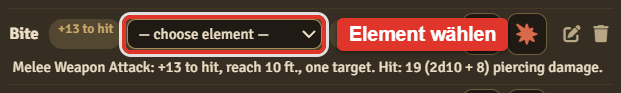
Anzeigename für die Spieler
Im Feld Display name steht, was die Spieler statt des echten Namens sehen: Chat-Karten, Kampfliste, Token-Tooltip. Die Spielleitung sieht weiterhin den echten Namen. Leer = echter Name.
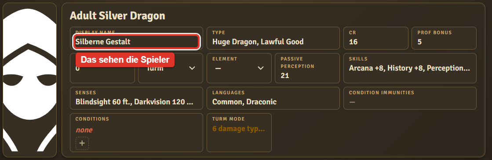
Mehrere Kopien setzen (Place copies)
- Rechtsklick auf den NPC in der Actors-Liste → Place copies (oder der gleichnamige Knopf im Drei-Punkte-Menü des NPC-Bogens).
- Anzahl (1–20) wählen. Number the tokens nummeriert „Gnoll 1…N“; ein Anzeigename wird mitnummeriert.
- Läuft ein Kampf, trägt Add to combat die Kopien gleich ein (ohne Initiative, siehe Kapitel 4).
Die Tokens erscheinen in einem Raster um die Bildmitte, freie Felder zuerst. Jede Kopie hat eigene HP.
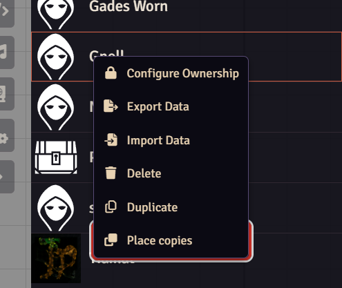
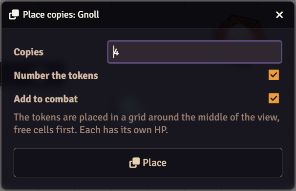
4 · Kampf
Angriffe, Schaden und Zustände laufen über Chat-Karten und echte Würfel. Die Spielleitung muss nichts nachrechnen.
Angriff → Schaden → auf das Ziel anwenden
- Ziel anvisieren: Token mit der Maus überfahren und T drücken (oder Rechtsklick → Zielscheibe).
- Im Bogen auf den Würfel-Knopf der Waffe klicken. Klick = normal, Shift = Vorteil, Strg/Alt = Nachteil, Rechtsklick = Dialog mit Situationsbonus (Abb. 4.1).
- Die Angriffskarte vergleicht mit der AC des Ziels (HIT/MISS, Krit bei 20 bzw. 19–20 mit „Crit 19-20“).
- Damage auf der Karte würfelt den Schaden. Die Chips zeigen, was das Ziel abwehrt (RES halbiert, IMM hebt auf, VUL verdoppelt).
- Apply to target zieht den Schaden ab: zuerst Temp-HP, dann HP, Resistenzen bereits verrechnet.
- Versehen? Undo auf der Ergebniskarte stellt HP und Zustände wieder her.
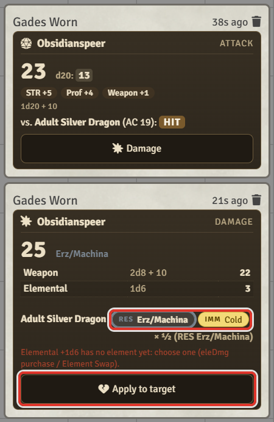
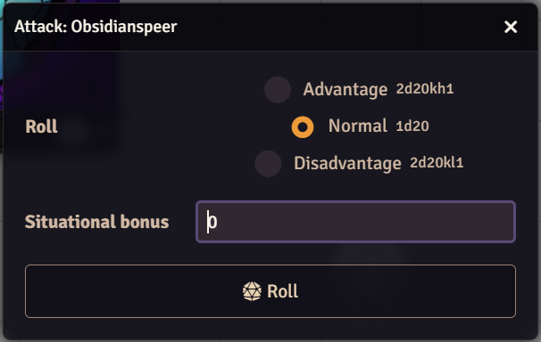
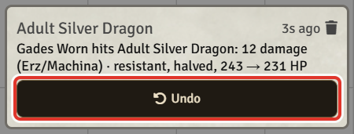
Zustände und Erschöpfung
- Schnellleiste über der Hotbar: ein Klick setzt oder entfernt den Zustand bei allen ausgewählten Tokens (oder den Zielen, wenn nichts ausgewählt ist). Ganz rechts die Erschöpfung: Linksklick +1, Rechtsklick −1.
- Token-HUD (Rechtsklick auf ein Token → Statussymbol): dieselben Zustände plus Erschöpfung 1–6.
- Zustände wirken auf die Würfe, z. B. Prone gibt Nachteil beim Angriff, Poisoned Nachteil auf Proben. Erschöpfung gibt −2 je Stufe auf alle d20-Würfe und −5 ft Tempo; Stufe 6 ist der Tod.
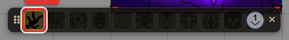
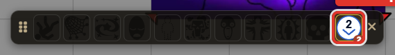
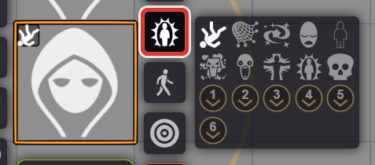
Combat Overview (Taste O)
Alle Kampfteilnehmer auf einen Blick: Initiative, AC, HP direkt editierbar, Zustände, Legendary-Zähler und Recharge-Fähigkeiten. Öffnen mit O oder dem Listen-Knopf im Combat Tracker. Mit dem Drachen-Knopf im Tracker würfelt die Spielleitung die Initiative aller NPCs, die noch keine haben.
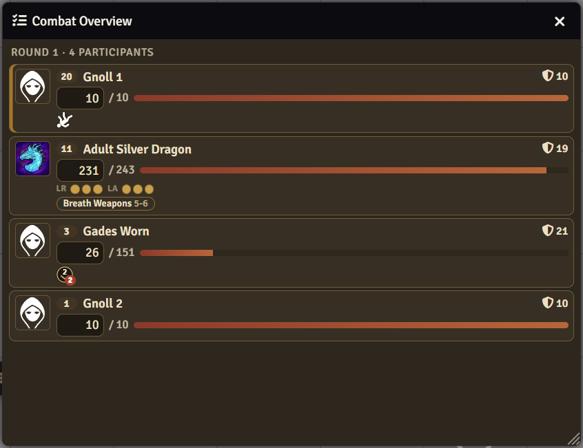
Flächen: das Odem-Beispiel
- Im NPC-Bogen beim Eintrag (hier „Cold Breath“, 60-ft-Kegel) den Polygon-Knopf klicken.
- Kegel und Linie starten am Token des NPC. Mit der Maus ausrichten, Klick setzt die Fläche.
- Alle Tokens in der Fläche werden zu Zielen. Hat der Eintrag einen Save, erscheint sofort die Save-Karte mit einem Knopf pro Ziel.
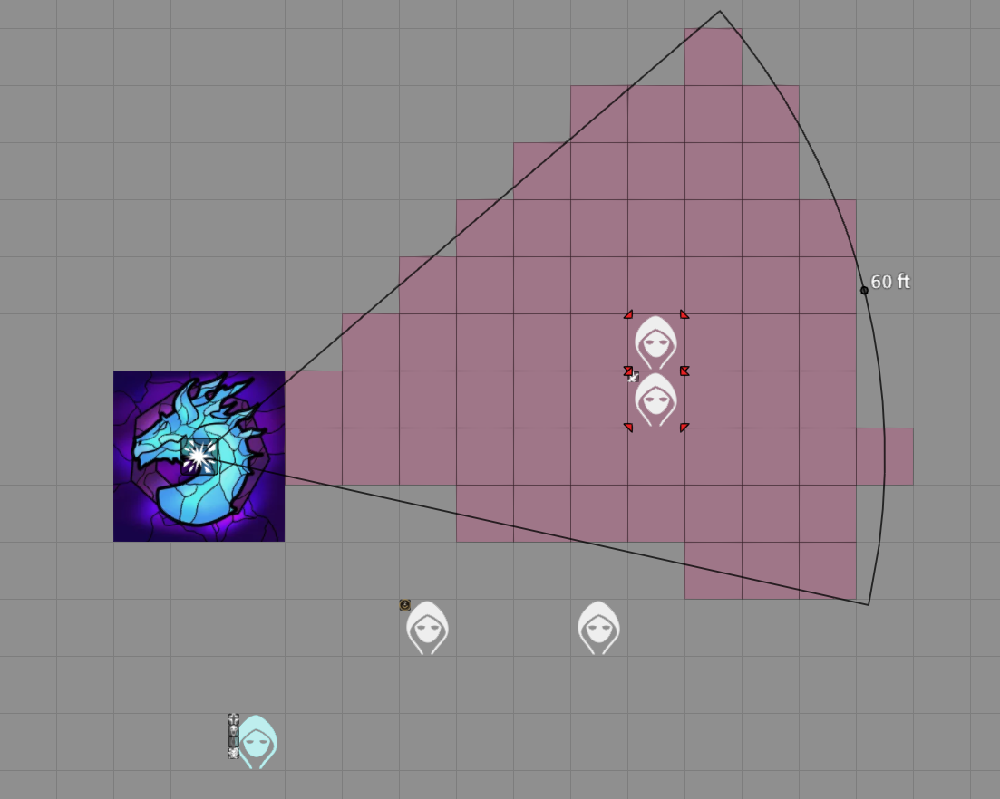
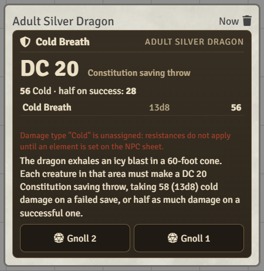
Zugwechsel aus Spielersicht
Kommt ein Spieler dran, bekommt er einen Banner und einen kurzen Ton; wer als Nächstes dran ist, einen kleinen Hinweis. Die Spielleitung sieht die Banner nicht.
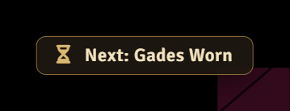
Todesrettungswürfe und besiegte NPCs
- Bei 0 HP würfelt der Spieler über die Kreise Death Saves in der Kampfleiste. Die Karte zählt Erfolge und Fehlschläge mit. Eine natürliche 20 bringt 1 HP zurück, eine natürliche 1 zählt doppelt. Erschöpfung zieht auch hier ab.
- Fällt ein NPC durch Apply to target auf 0 HP, entfernt das System sein Token nach etwa einer Sekunde (der Akteur bleibt in der Liste). Die Welteinstellung Defeated NPC tokens kann stattdessen nur als „tot“ markieren.
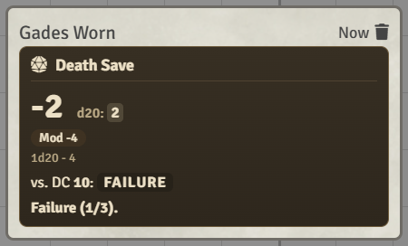
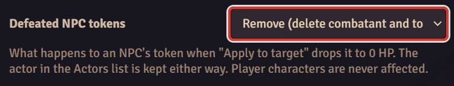
5 · Würfe anfordern (Request Roll)
Eine Gruppe würfeln lassen: Rettungswurf, Attributs- oder Fertigkeitsprobe, auf Wunsch mit Folgen bei Misserfolg.
- AP-Turm → Request Roll.
- Art (Saving Throw, Ability Check, Skill Check) und Attribut bzw. Fertigkeit wählen.
- Einen DC eintragen. Erst dann erscheint der Bereich für die Folgen: Schaden (Formel und Typ, auf Wunsch halb bei Erfolg), ein Zustand oder eine Stufe Erschöpfung.
- Empfänger anhaken, Request. Im Chat erscheint eine Gruppen-Karte.
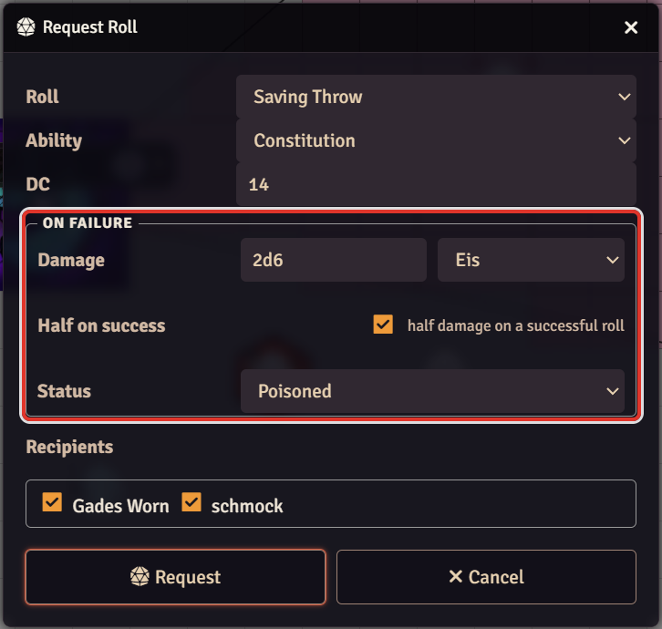
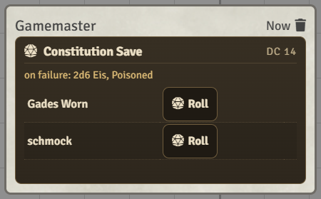
So klicken die Spieler
Jeder Spieler sieht die Karte, kann aber nur den Roll-Knopf seines eigenen Charakters drücken; fremde Knöpfe sind ausgegraut. Das Ergebnis steht danach für alle in der Zeile. Bei Misserfolg wird der Zustand sofort gesetzt; der Schaden liegt als Knopf bereit.
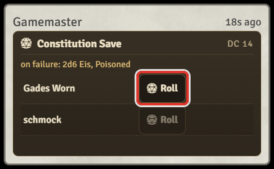
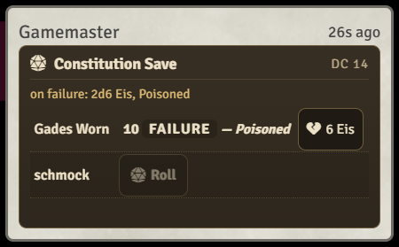
6 · AP und Turmwissen vergeben
Verdiente AP gutschreiben (daraus folgen Level, Übungsbonus, Milestones) und Turmwissen als neuen Rang eintragen.
Award AP
- AP-Turm → Award AP.
- Charaktere anhaken, Betrag und optional einen Grund eintragen, Award.
- Die Chat-Karte sagt an, was daraus folgt: neues Level, höherer Übungsbonus, ein neuer Milestone, ein fälliger Trefferwurf.
- Korrektur: einen negativen Betrag vergeben. Verdiente AP fallen nie unter 0.
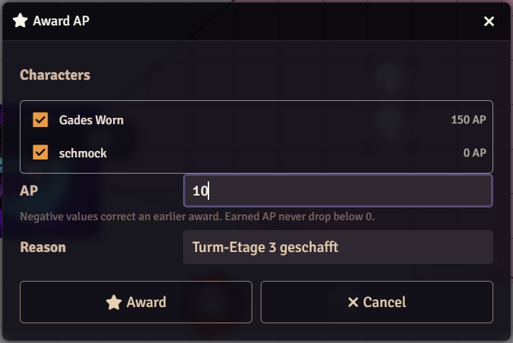
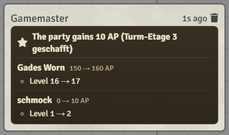
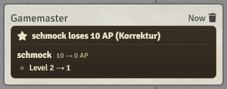
Grant Turmwissen
AP-Turm → Grant Turmwissen: Charakter anhaken, den Auslöser als Text eintragen, Grant. Jeder gewählte Charakter bekommt einen neuen Rang; die Karte geht nur an die Spielleitung und die betroffenen Spieler.
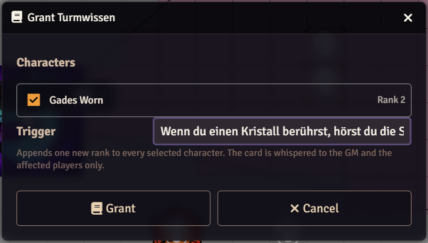
7 · Loot, Party Stash, Übergabe, Item-Bibliothek
Beutetabellen aus Word oder Excel übernehmen, Beute würfeln und verteilen, gemeinsame Beute im Party Stash lagern.
Tabelle importieren
- Seitenleiste Rollable Tables → AP-Turm: Import table.
- Namen eintragen und den Text einfügen: eine Liste (jede Zeile ein Eintrag, ergibt 1dN) oder Zeilen mit Bereichen wie
1-5: Heiltrank. Alternativ eine Datei laden:.txtoder.json(Foundry-Tabellen-Export, schlichte Liste oder AP-Turm-Export). - Die Vorschau zeigt Formel, Einträge sowie Lücken und Überschneidungen. Import legt die Tabelle an.
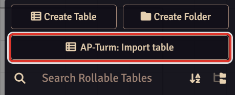
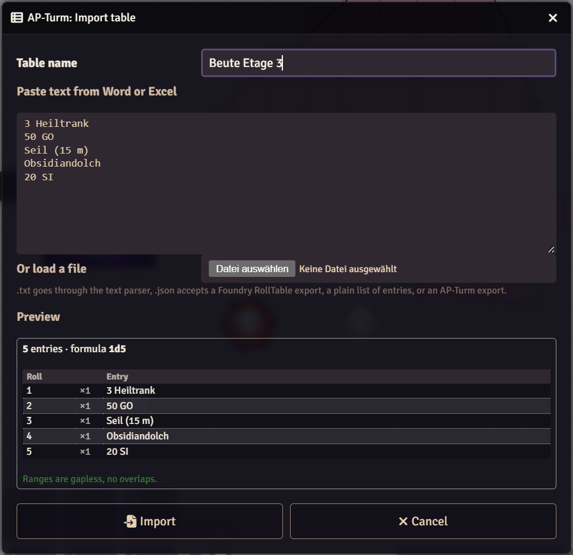
Würfeln und Claim
- Tabelle würfeln (Tabelle öffnen → Roll). Jedes Ergebnis bekommt einen Claim-Knopf.
- Claim fragt nach dem Empfänger. An erster Stelle steht immer der Party Stash, darunter die Charaktere (Spieler sehen nur ihre eigenen).
- Reine Geldbeträge in der Währung des Modus (z. B. „50 GO“) landen in der Kasse, alles andere wird ein Gegenstand, im Turm-Modus mit Herkunft „im Turm gefunden“.
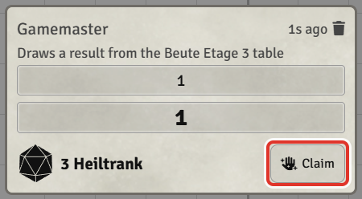
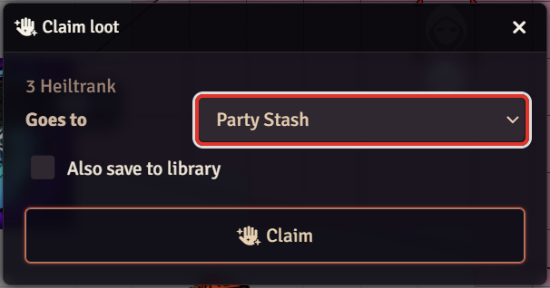
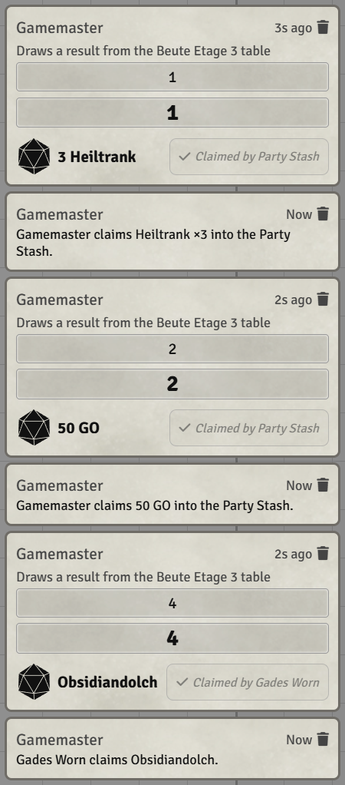
Party Stash
Der Stash ist ein gemeinsamer Akteur, der allen Spielern gehört. Die Spielleitung legt ihn beim ersten Gebrauch automatisch an (oder über AP-Turm → Party Stash). Er hat eine Kasse in den Währungen des Modus und eine Gegenstandsliste ohne Traglimit. Gegenstände „aus dem Turm“ im Stash zählen bei niemandem auf die persönliche 5er-Grenze.
- Hineinlegen: im eigenen Inventar Give to… → Party Stash, oder den Gegenstand auf den Stash ziehen.
- Herausnehmen: Take an der Zeile oder den Gegenstand auf den eigenen Bogen ziehen. Bei Stapeln wird nach der Anzahl gefragt; der Chat meldet „Gades Worn takes 2× Heiltrank from the Party Stash.“
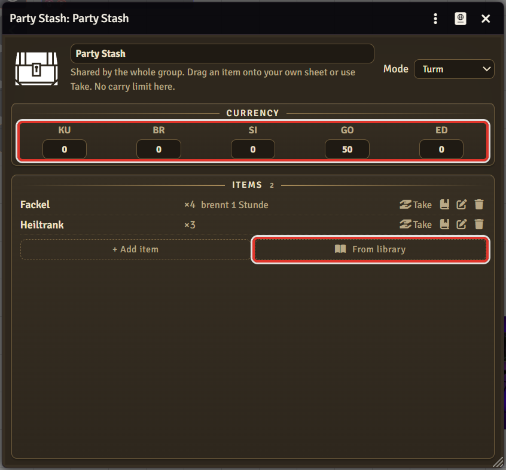
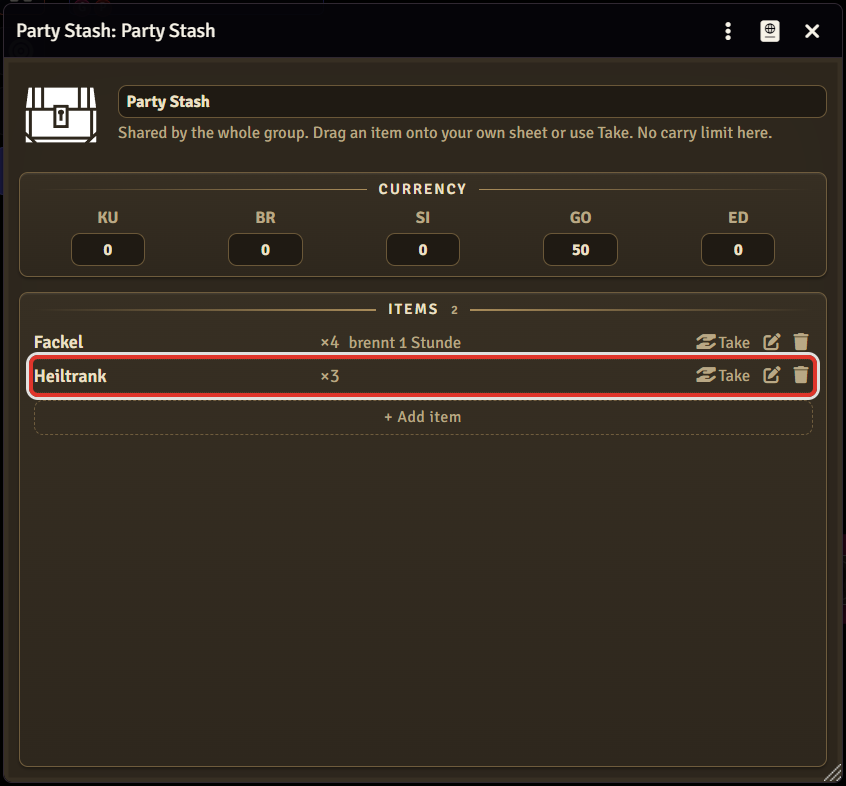
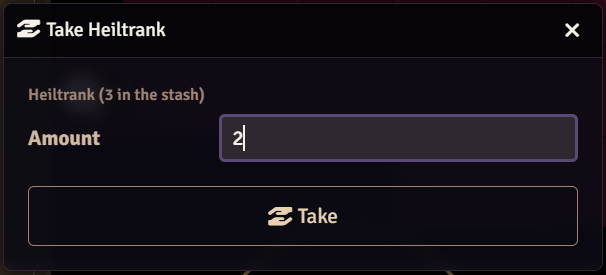
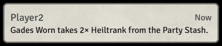
Übergabe zwischen Charakteren
Im Inventar an der Zeile Give to… (Hand-Symbol): Empfänger und bei Stapeln die Anzahl wählen. Alternativ den Gegenstand auf den Bogen, das Token oder die Zeile in der Actors-Liste des Empfängers ziehen. Gehört der Empfänger dem Spieler nicht, erledigt die Spielleitung die Übergabe automatisch im Hintergrund.
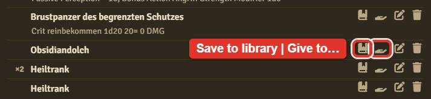
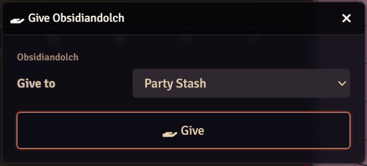
Item-Bibliothek
Einmal angelegte Gegenstände wiederverwenden: Save to library (Buch-Symbol, nur Spielleitung) legt eine Kopie in das Welt-Kompendium „AP-Turm Library“. From library in NPC-Bogen oder Stash fügt sie wieder ein; die Suche filtert nach Namen.
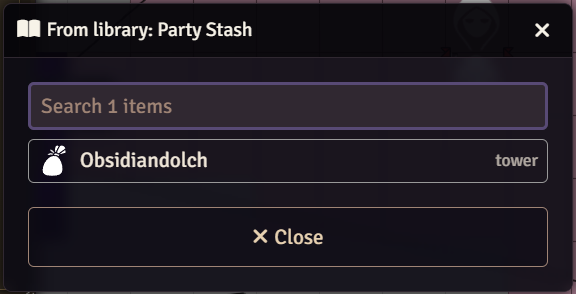
8 · Shop-Editor: eigene Point-Buy-Einträge
Hausregeln und Turm-Belohnungen als kaufbare Shop-Einträge, die wie die eingebauten rechnen.
- AP-Turm → Shop Editor (oder Shop editor oben im Shop-Reiter eines Bogens) → New entry.
- Name, Kategorie (bestehende oder neue), Beschreibung, Kostenleiter (
10, 20, 40), Multiplikator für weitere Ränge, Max-Ränge, Voraussetzungen und eine eventuelle Wahl beim Kauf eintragen. - Unter Effects die Wirkungen zusammenstellen (Werte gelten pro Rang): Boni auf Attribut, Save, Skill, AC, Initiative, Tempo, HP-Max; Vorteil; Übung; Ressourcen-Pool mit Formel; Zauberpunkte; Wirkungen der Ränge 6–9; Elementschaden; reiner Text.
- Create. Der Eintrag erscheint sofort in allen Bögen (mit ★) und im Regel-Journal.
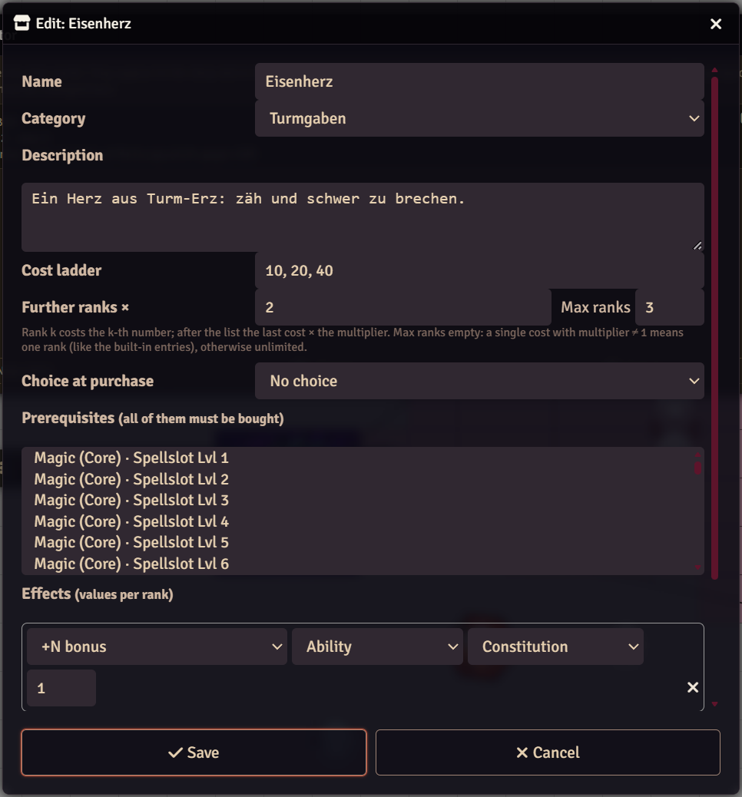
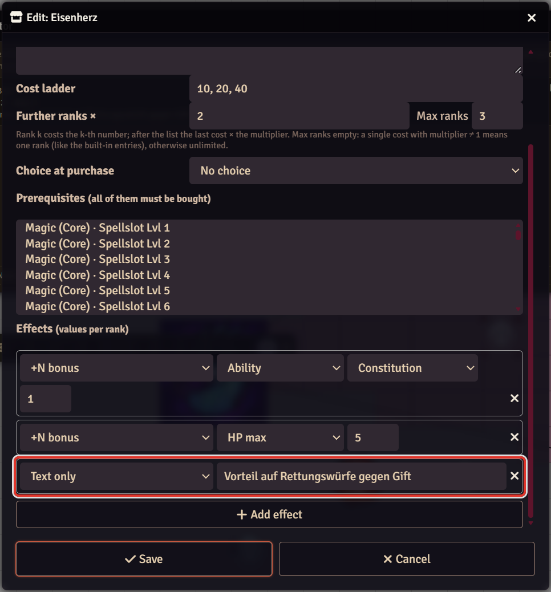
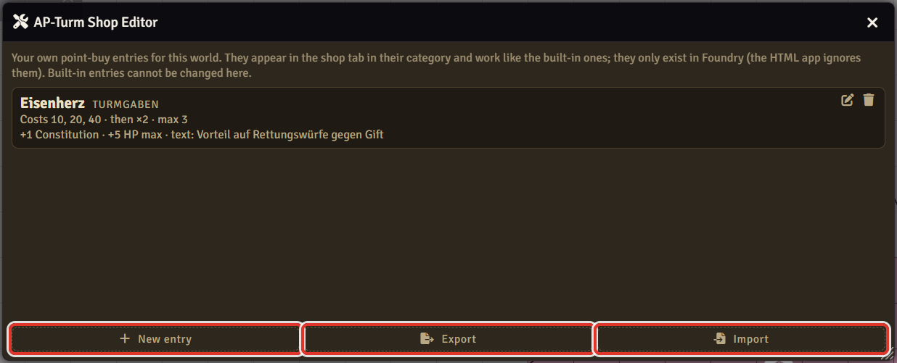
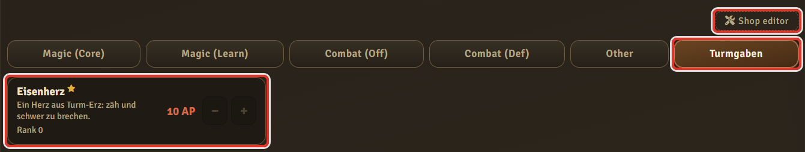
9 · Jukebox
Musik und Geräusche ohne die Playlist-Seitenleiste: Stimmungen per Klick überblenden, Soundboard, Musik vom eigenen PC.
- Öffnen über das Schallplatten-Symbol unten in der linken Werkzeugleiste oder mit J.
- Musik vom PC: Import from computer (oder Ordner/Dateien auf das Fenster ziehen). Die Dateien werden nach
Data/music/<Playlist>hochgeladen, damit alle Spieler sie hören, und als Playlist angelegt. Musik, die schon in Foundrys Datenordner liegt: Import folder as playlist. - Moods: + Add mood verbindet eine Playlist mit einer farbigen Kachel. Klick auf eine Kachel blendet von der laufenden Musik über; ein zweiter Klick pausiert.
- Combat music: Eine Kachel mit Haken Combat übernimmt bei Kampfbeginn, nach dem Kampf geht es zurück. Einschalten in den Welteinstellungen (Abb. 9.5).
- Soundboard: Eine Playlist mit dem Namen „Soundboard“ erscheint als Knopfleiste für Einzelgeräusche (Tür, Donner …) über der Musik.
- Bibliothek: alle Playlists zum Aufklappen. Play-Knopf spielt genau diesen Track, ein Klick in den Fortschrittsbalken spult (bei allen Spielern), Tracks lassen sich per Ziehen sortieren oder in eine andere Playlist verschieben. Rechtsklick oder ⋮ öffnet Rename, Add file…, Create mood tile, Delete.
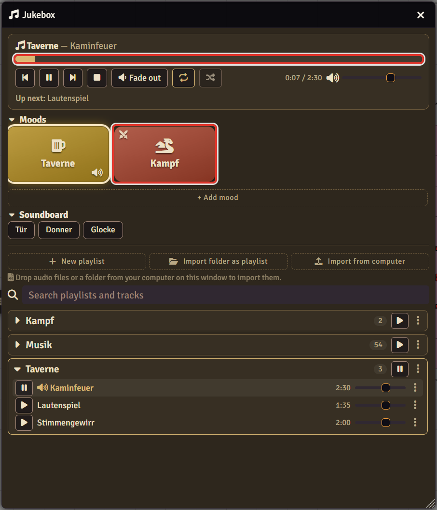
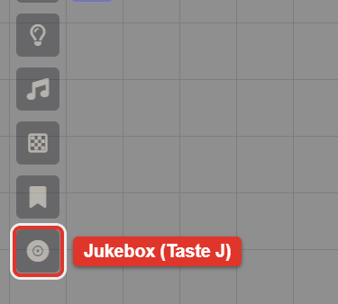
Die Lautstärke oben gilt für alle Spieler. Die persönliche Lautstärke stellt jeder in Foundrys eigenen Audio-Einstellungen ein.
10 · Nachschlagen und Einstellungen
Regel-Journal „AP-Turm Rules“
Das System legt beim ersten Weltstart ein Journal mit den Regeln an: Progression, Shop, Elemente & Schaden, Zustände, Kampf & Rast. Alle Zahlen darin kommen direkt aus den Regeltabellen des Systems, auch eigene Shop-Einträge. Spieler können es lesen. Es wird bei Updates und Shop-Änderungen automatisch neu erzeugt, auf Wunsch über AP-Turm → Rebuild rules journal. Handänderungen daran werden dabei überschrieben.
Tastenkürzel
Einstellbar unter Game Settings → Configure Controls → AP-Turm. In Textfeldern greifen sie nie. Spielleiter-Kürzel sind für Spieler unsichtbar und tun bei ihnen nichts.
| Aktion | Standard | Wer |
|---|---|---|
| Combat Overview öffnen/schließen | O | Spielleitung |
| Jukebox öffnen/schließen | J | Spielleitung |
| Zustandsleiste ein/aus | — | alle (außer die Leiste ist auf die Spielleitung beschränkt) |
| Award AP | — | Spielleitung |
| Request Roll | — | Spielleitung |
Animationen (optional)
Für Angriffs- und Zauberanimationen die Module JB2A (die kostenlose Fassung reicht) und Sequencer installieren: Foundry-Setup → Add-on Modules → Install Module, danach in der Welt unter Manage Modules aktivieren. Ohne diese Module läuft alles genauso, nur ohne Animation.
Einstellungen des Systems
Unter Game Settings → Configure Settings → Reiter AP-Turm. Welt-Einstellungen gelten für alle, Client-Einstellungen pro Browser.
| Name | Wirkung | Standard |
|---|---|---|
| Defeated NPC tokens (Welt) | Was mit dem Token eines NPC passiert, den „Apply to target“ auf 0 HP bringt: entfernen oder nur als tot markieren. Der Akteur bleibt immer erhalten; Spielercharaktere sind nie betroffen. | Remove |
| Show hit feedback (Welt) | Schwebende Schadens- und Heilzahlen über dem Token plus kurzes Aufblitzen, für alle sichtbar. | an |
| Attack animations (JB2A) (Welt) | Angriffs-, Geschoss- und Zauberanimationen; nur mit den Modulen JB2A und Sequencer. | an |
| Concentration automation (Welt) | Ein Konzentrationszauber setzt „Concentrating“; Schaden verlangt dann einen CON-Save (SG = max(10, halber Schaden)). | an |
| Turn sound (Welt) | Kurzer Ton für den Spieler, der am Zug ist (zusammen mit dem Banner). | an |
| Token tooltips (Welt) | Beim Überfahren eines Tokens eine kleine Karte; Spieler sehen Werte nur bei Tokens, die sie beobachten dürfen. | an |
| Combat music (Welt) | Bei Kampfbeginn zur Kampf-Kachel der Jukebox überblenden und danach zurück. | aus |
| Condition bar for the GM only (Welt) | Blendet die Zustandsleiste für alle Spieler aus. | aus |
| Show condition bar (Client) | Die Zustandsleiste über der Hotbar anzeigen. | an |
| Show reach ring (Client) | Ring um das ausgewählte Token in Reichweite der ausgerüsteten Waffe (NPC: längste Nahkampfreichweite). | an |
11 · Bekannte Grenzen und wenn etwas klemmt
Bekannte Grenzen
- Keine System-Kompendien: Ausrüstung, Zauber und Gegner werden importiert oder von Hand angelegt; nur die Item-Bibliothek ist ein (Welt-)Kompendium. Der Shop ist eine Code-Tabelle.
- Fernkampf erkennt die Animation am Waffennamen, am Reichweitentext von NPC-Aktionen oder an DEX als Waffenattribut. Eine ungewöhnlich benannte Fernkampfwaffe mit STR zeigt einen Nahkampf-Hieb.
- Der Statblock-Parser deckt die üblichen Layouts ab, aber nicht jede Formatierung. Was er nicht erkennt, bleibt als Text im Eintrag stehen und lässt sich im Bogen nachtragen.
- Im Turm-Modus bleiben importierte D&D-Schadenstypen bis zur Zuweisung durch die Spielleitung ohne Wirkung auf Resistenzen. Das ist Absicht.
- Active Effects werden nicht ausgewertet: Feat-Boni werden wie in der App summiert, nicht als Effekte verteilt.
- Die Migration schreibt alte Feldformen nur bei Akteuren und Items der Welt zurück. Nicht verknüpfte Tokens auf Szenen behalten ihre Kopie; sie funktionieren weiter, werden im Migrationsbericht aber nur gezählt.
- Der System-Socket vertraut dem eigenen Spieltisch: Eine Schadensanfrage eines Spielers wird auf Plausibilität geprüft, nicht gegen manipulierte Clients abgesichert.
- Getestet mit Foundry 13.351. Ältere Builds von Version 13 sollten laufen, sind aber nicht geprüft; Version 12 und früher nicht.
Wenn etwas klemmt
| Symptom | Abhilfe |
|---|---|
| Knopf reagiert nicht, Fenster sieht veraltet aus | F5 lädt die Seite neu. Das ist gefahrlos, alle Daten liegen auf dem Server. |
| Etwas schlägt fehl, eine Meldung sagt „see the console“ | F12 öffnet die Entwicklerkonsole; rot markierte Zeilen mit „ap-turm“ abfotografieren oder kopieren und weitergeben. |
| Nach einem Update fehlt ein neuer Akteur-Typ (z. B. Party Stash lässt sich nicht anlegen) | Welt über Return to Setup beenden und neu starten. Neue Akteur-Typen liest der Server nur beim Weltstart ein. |
| Ein Spieler kann Schaden nicht anwenden oder einen Gegenstand nicht übergeben | Diese Aktionen erledigt im Hintergrund der aktive Spielleiter. Ist keiner eingeloggt, bekommt der Spieler eine Meldung und es passiert nichts. |
| Zwei Browserfenster als Spielleitung offen | Nur eines benutzen und das andere schließen. Ein Fenster mit älterem Stand kann Automatik doppelt oder mit altem Code ausführen. |